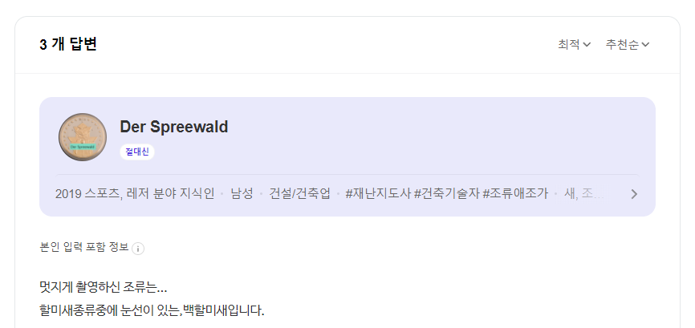
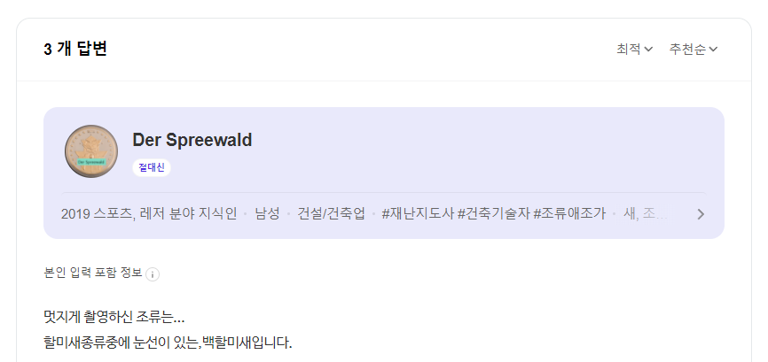

어린이집의 나
Cars
어린이집 때부터 초등 저학년까지 저는 자동차에 빠졌습니다.
부품이나 작동 방식 등의 기계공학 방향이 아니라 자동차들의 브랜드와 모델 쪽에 관심이 많았습니다.
주변에서 보이는 자동차들의 브랜드와 모델을 모조리 외웠습니다. 부모님은 저를 위해 자동차 브랜드 로고들이 담긴 책자를 만들어 주셨고 저는 그걸 매우 아꼈습니다.
저의 자동차 사랑이 절정에 있었던 당시의 저의 최애 자동차는 닛산의 큐브와 미니 쿠퍼였습니다.
주변에서 보이는 자동차들의 브랜드와 모델을 모조리 외웠습니다. 부모님은 저를 위해 자동차 브랜드 로고들이 담긴 책자를 만들어 주셨고 저는 그걸 매우 아꼈습니다.
저의 자동차 사랑이 절정에 있었던 당시의 저의 최애 자동차는 닛산의 큐브와 미니 쿠퍼였습니다.
![[자동차 쏘나타의 사진]](photo1.png)
현대자동차 쏘나타 2016년형, 전자신문
당시 가장 좋아했던 현대자동차 자동차
당시 가장 좋아했던 현대자동차 자동차
![[Universe Sandbox의 로고]](photo2.png)
![[경인선 신저항 1x85편성 열차]](photo11.png)
![[엔트리 블록 1]](photo3.png)
![[엔트리 블록 1]](photo4.png)
![[나의 첫 게임]](photo5.png)
![[백할미새의 사진]](photo12.png) 

![[큰고니 3마리가 삼각형을 이루어 나는 모습]](photo14.png)
![[털발말똥가리가 나무 사이를 나는 모습]](photo15.png)